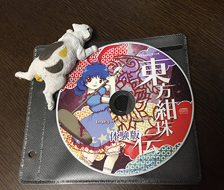
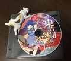

- Welcome to Touhou Wiki!
- Please register to edit. For assistance, check in with our Discord server or IRC channel.
File:Th15DemoCD.jpg
Jump to navigation
Jump to search

{kind=link}
No higher resolution available.
Th15DemoCD.jpg (440 × 374 pixels, file size: 164 KB, MIME type: image/jpeg)
Summary[edit]
{kind=link}
Photo of Legacy of Lunatic Kingdom's demo CD. Taken from ZUN's blog
Licensing[edit]
{kind=link}
This image is cover art for a video or computer game, and the copyright for it is most likely owned by either the game's publisher or developer. It is believed that the use of low-resolution images of game cover art
|
File history
Click on a date/time to view the file as it appeared at that time.
| Date/Time | Thumbnail | Dimensions | User | Comment | |
|---|---|---|---|---|---|
| current | 17:27, 11 May 2015 |  | 440 × 374 (164 KB) | MapleTree (talk | contribs) | Photo of Legacy of Lunatic Kingdom's demo CD. Taken from ZUN's blog Category:Photos Category:Legacy of Lunatic Kingdom Images |
- You cannot overwrite this file.
File usage
The following 3 pages uses this file:
{kind=link}
{kind=link}
{kind=link}
{kind=link}
{kind=link}
{kind=link}
{kind=link}
{kind=link}